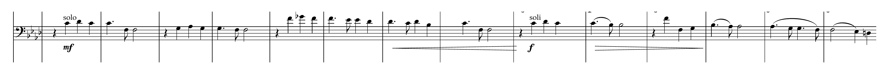
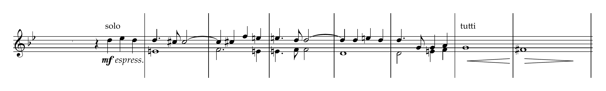
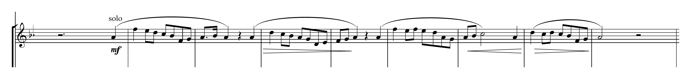

The Persians called it Dar-e Alān, the gate of the Alans: the narrow gorge that carries the old road north through the Caucasus.
Aivazovsky painted it in 1868. This piece starts from that painting and follows a traveller into the gorge — through apprehension and vulnerability toward determination and, finally, courage. The winds carry the line the way a voice would: in their natural registers, with the long breath of bel canto and resonant harmony underneath.
[Continue the note in your own words — the concert speech from 31 October is a good source.]
Solos
100%
Trombone I solo · bars 3–16

Trumpet I solo, mf espressivo · bars 20–27

Horn I solo · bars 73–81

Instrumentation
For wind orchestra
Woodwinds
Piccolo Flute I, II, III Oboe I (doubling cor anglais), II Bassoon I, II Clarinet in B♭ I, II, III Bass clarinet
Saxophones
Soprano Alto I, II Tenor Baritone
Brass
Horn in F I–IV Trumpet in B♭ I, II, III Trombone I, II, III Euphonium Tuba
Percussion and keyboard
Timpani Triangle, bass drum, cymbals Vibraphone Piano